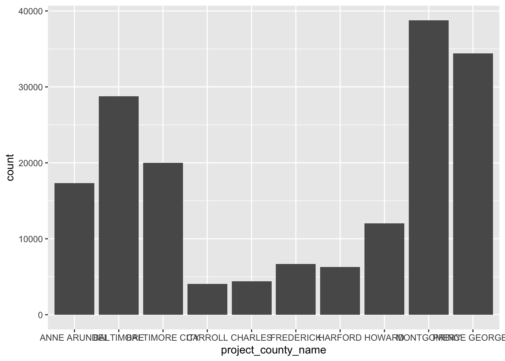
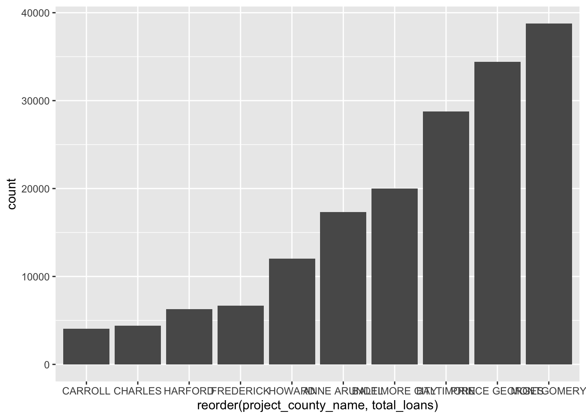
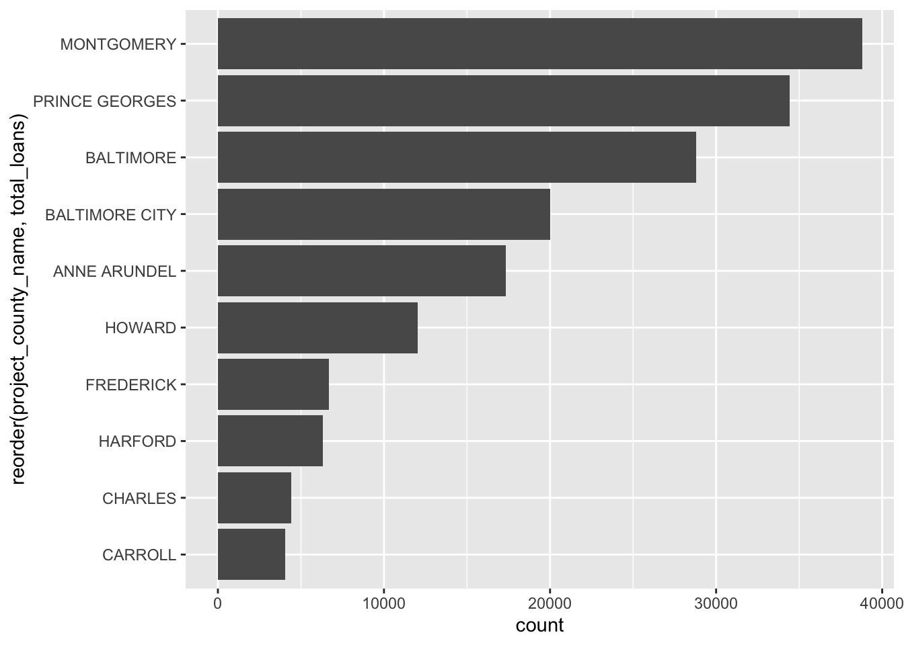
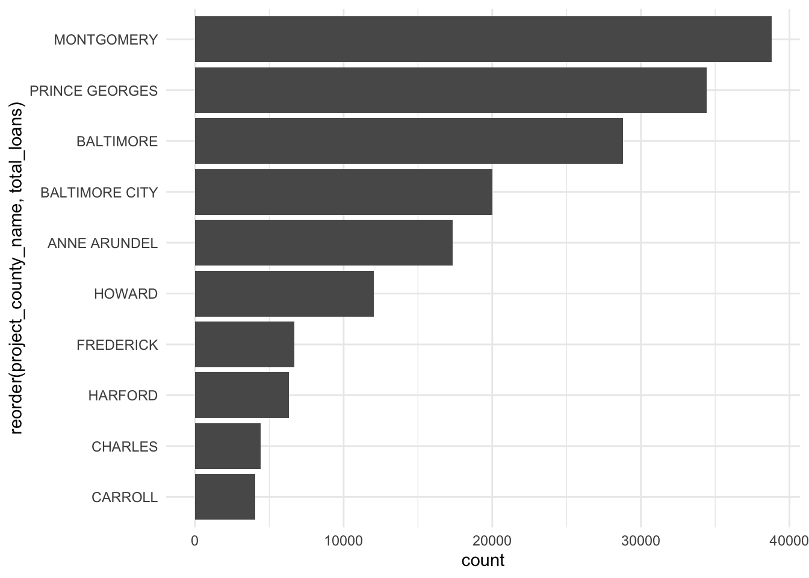
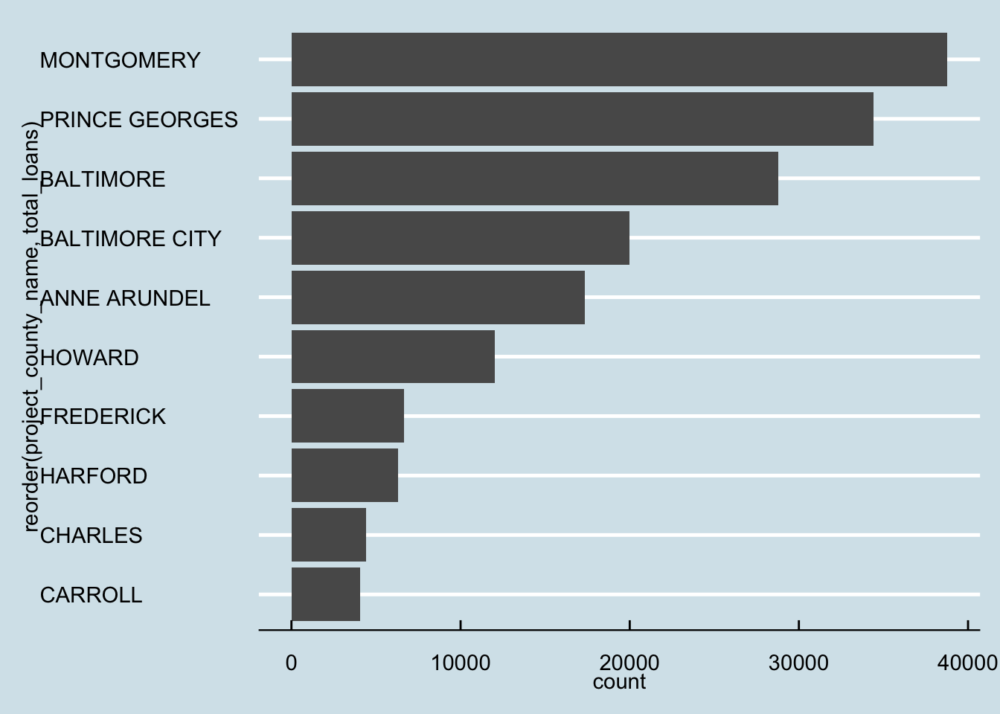
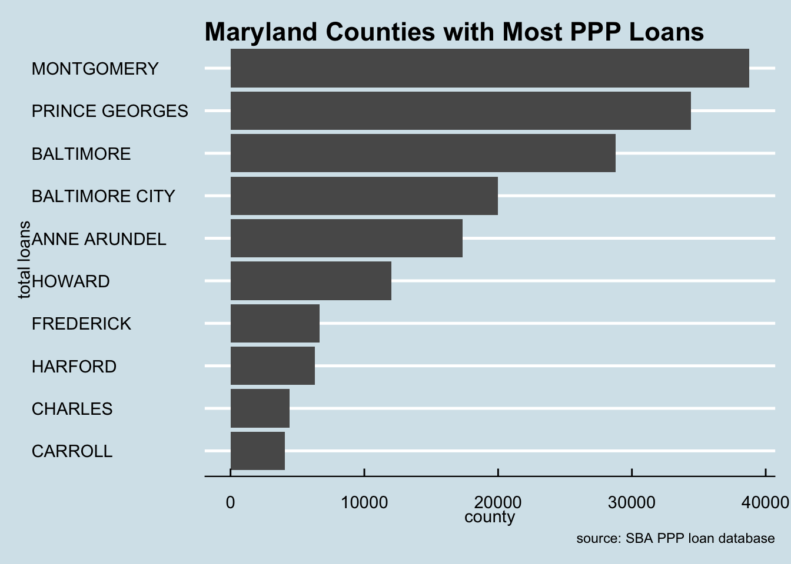
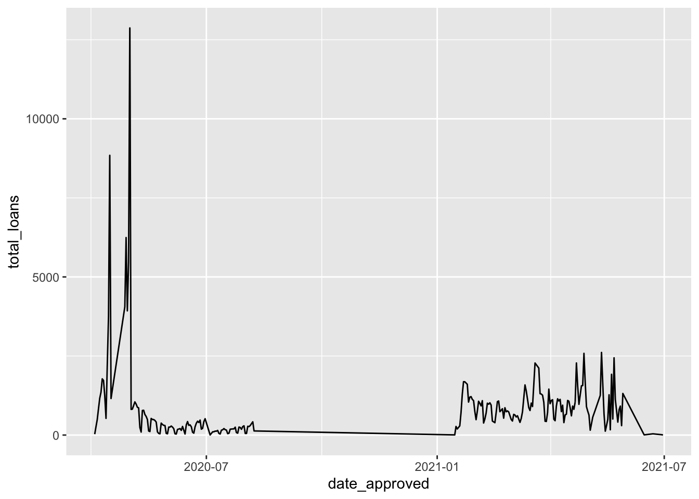
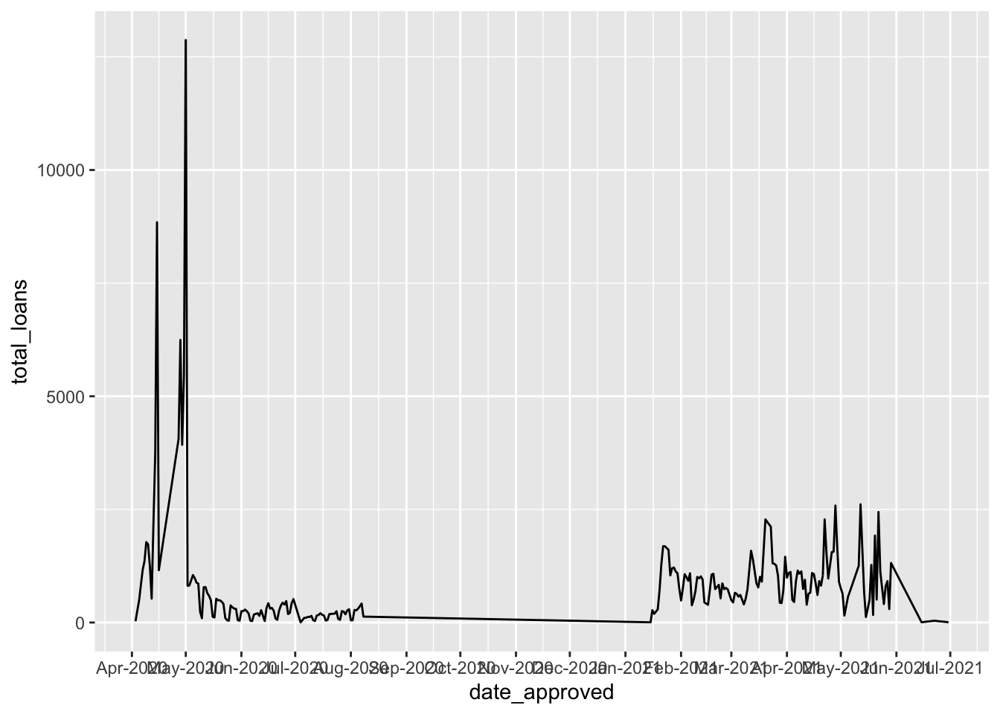
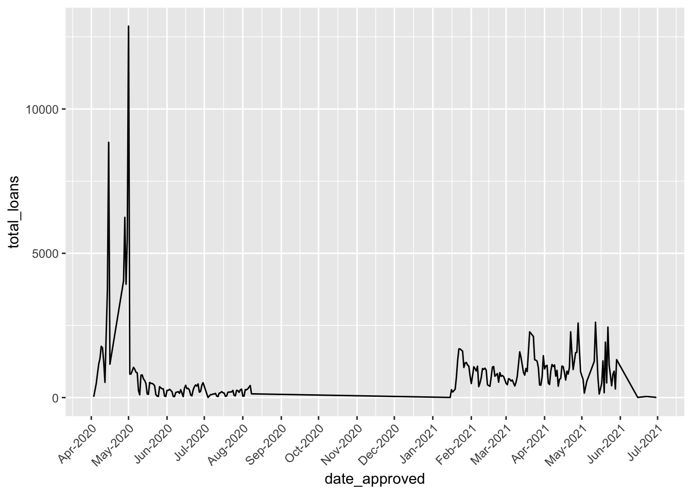

Chapter 18 Visualizing your data for reporting
Visualizing data is becoming a much greater part of journalism. Large news organizations are creating graphics desks that create complex visuals with data to inform the public about important events.
To do it well is a course on its own. And not every story needs a feat of programming and art. Sometimes, you can help yourself and your story by just creating a quick chart, which helps you see patterns in the data that wouldn’t otherwise surface.
Good news: one of the best libraries for visualizing data is in the tidyverse and it’s pretty simple to make simple charts quickly with just a little bit of code. It’s called ggplot2.
Let’s revisit some data we’ve used in the past and turn it into charts. First, let’s load libraries. When we load the tidyverse, we get ggplot2.
library(tidyverse)The dataset we’ll use is the PPP loan data for Maryland. Let’s load it.
ppp_maryland <- read_csv("pre_labs/pre_lab_09/data/ppp_loans_md.csv.zip")##
## ── Column specification ────────────────────────────────────────────────────────
## cols(
## .default = col_character(),
## id = col_double(),
## amount = col_double(),
## naics_code = col_double(),
## non_profit = col_logical(),
## jobs_retained = col_double(),
## date_approved = col_date(format = ""),
## loan_range_sort_key = col_logical(),
## previous_loan_range = col_logical(),
## previous_name = col_logical(),
## loan_number = col_double(),
## sba_office_code = col_double(),
## term = col_double(),
## sba_guaranty_percentage = col_double(),
## initial_approval_amount = col_double(),
## current_approval_amount = col_double(),
## undisbursed_amount = col_double(),
## servicing_lender_location_id = col_double(),
## utilities_proceed = col_double(),
## payroll_proceed = col_double(),
## mortgage_interest_proceed = col_double()
## # ... with 12 more columns
## )
## ℹ Use `spec()` for the full column specifications.## Warning: 12802 parsing failures.
## row col expected actual file
## 170056 old_slug 1/0/T/F/TRUE/FALSE aditi-llc-d139eb25916444a03984f38eebda4e63 'pre_labs/pre_lab_09/data/ppp_loans_md.csv.zip'
## 170057 old_slug 1/0/T/F/TRUE/FALSE jvef-inc-00d405e42fed70949e474a678fb7cefe 'pre_labs/pre_lab_09/data/ppp_loans_md.csv.zip'
## 170058 old_slug 1/0/T/F/TRUE/FALSE mak-express-inc-9cc921dee107cb65c6728e818fb49c2a 'pre_labs/pre_lab_09/data/ppp_loans_md.csv.zip'
## 170059 old_slug 1/0/T/F/TRUE/FALSE pro-coat-llc-133a6b10843b022d479acb6bce5755c7 'pre_labs/pre_lab_09/data/ppp_loans_md.csv.zip'
## 170060 old_slug 1/0/T/F/TRUE/FALSE dvcanvass-llc-7b4219ba6ad6aa4b4b8fcb47b8d683c4 'pre_labs/pre_lab_09/data/ppp_loans_md.csv.zip'
## ...... ........ .................. ................................................ ...............................................
## See problems(...) for more details.18.1 Bar charts
The first kind of chart we’ll create is a simple bar chart.
It’s a chart designed to show differences between things – the magnitude of one thing, compared to the next thing, and the next, and the next.
So if we have thing, like a county, or a state, or a group name, and then a count of that group, we can make a bar chart.
So what does the chart of the top 10 maryland counties with the most total PPP loans look like?
First, we’ll create a dataframe of those top 10, called maryland_ppp_top_counties.
maryland_ppp_top_counties <- ppp_maryland %>%
group_by(project_county_name) %>%
summarise(
total_loans = n()
) %>%
arrange(desc(total_loans)) %>%
head(10)
maryland_ppp_top_counties## # A tibble: 10 x 2
## project_county_name total_loans
## <chr> <int>
## 1 MONTGOMERY 38782
## 2 PRINCE GEORGES 34409
## 3 BALTIMORE 28789
## 4 BALTIMORE CITY 20004
## 5 ANNE ARUNDEL 17336
## 6 HOWARD 12011
## 7 FREDERICK 6666
## 8 HARFORD 6301
## 9 CHARLES 4398
## 10 CARROLL 4040Now let’s create a bar chart using ggplot.
With ggplot, the first thing we’ll always do is draw a blank canvas that will house our chart. We start with our dataframe name, and then (%>%) we invoke the ggplot() function to make that blank canvas. All this does is make a gray box, the blank canvas that will hold our chart.
maryland_ppp_top_counties %>%
ggplot()
Next we need to tell ggplot what kind of chart to make.
In ggplot, we work with two key concepts called geometries (abbreivated frequently as geom) and asthetics (abbreviated as aes).
Geometries are the shape that the data will take; think of line charts, bar charts, scatterplots, histograms, pie charts and other common graphics forms.
Asesthetics help ggplot know what component of our data to visualize – why we’ll visualize values from one column instead of another.
In a bar chart, we first pass in the data to the geometry, then set the aesthetic.
In the codeblock below, we’ve added a new function, geom_bar().
Using geom_bar() – as opposed to geom_line() – says we’re making a bar chart.
Inside of that function, the asthetic, aes, says which columns to use in drawing the chart.
We’re setting the values on the x axis (horizontal) to be the name of the county. We set weight to total loans, and it uses that value to “weight” or set the height of each bar.
One quirk here with ggplot.
After we’ve invoked the ggplot() function, you’ll notice we’re using a + symbol. It means the same thing as %>% – “and then do this.” It’s just a quirk of ggplot() that after you invoke the ggplot() function, you use + instead of %>%. It makes no sense to me either, just something to live with.
maryland_ppp_top_counties %>%
ggplot() +
geom_bar(aes(x=project_county_name, weight=total_loans))
This is a very basic chart. But it’s hard to derive much meaning from this chart, because the counties aren’t ordered from highest to lowest by total_loans. We can fix that by using the reorder() function to do just that:
maryland_ppp_top_counties %>%
ggplot() +
geom_bar(aes(x=reorder(project_county_name,total_loans), weight=total_loans))
This is a little more useful. But the bottom is kind of a mess, with overlapping names. We can fix that by flipping it from a vertical bar chart (also called a column chart) to a horizontal one. coord_flip() does that for you.
maryland_ppp_top_counties %>%
ggplot() +
geom_bar(aes(x=reorder(project_county_name,total_loans), weight=total_loans)) +
coord_flip()
Is this art? No. Does it quickly tell you something meaningful? It does.
We’re mainly going to use these charts to help us in reporting, so style isn’t that important.
But it’s worth mentioning that we can pretty up these charts for publication, if we wanted to, with some more code. To style the chart, we can change or even modify the “theme,” a kind of skin that makes the chart look better.
It’s kind of like applying CSS to html. Here I’m changing the theme slightly to remove the gray background with one of ggplot’s built in themes, theme_minimal()
maryland_ppp_top_counties %>%
ggplot() +
geom_bar(aes(x=reorder(project_county_name,total_loans), weight=total_loans)) +
coord_flip() +
theme_minimal() The ggplot universe is pretty big, and lots of people have made and released cool themes for you to use. Want to make your graphics look kind of like The Economist’s graphics? There’s a theme for that.
First, you have to install and load a package that contains lots of extra themes, called ggthemes.
#install.packages('ggthemes')
library(ggthemes)And now we’ll apply the economist theme from that package with theme_economist()
maryland_ppp_top_counties %>%
ggplot() +
geom_bar(aes(x=reorder(project_county_name,total_loans), weight=total_loans)) +
coord_flip() +
theme_economist() Those axis titles are kind of a mess. Let’s change “count” on the x axis to “total loans” and change “reorder(project_county_name,total_loans)” to “county.” And while we’re at it, let’s add a basic title and a source as a caption. We’ll use a new function, labs(), which is short for labels.
maryland_ppp_top_counties %>%
ggplot() +
geom_bar(aes(x=reorder(project_county_name,total_loans), weight=total_loans)) +
coord_flip() +
theme_economist() +
labs(
title="Maryland Counties with Most PPP Loans",
x = "total loans",
y = "county",
caption = "source: SBA PPP loan database"
) Viola. Not super pretty, but good enough to show an editor to help them understand the conclusions you reached with your data analysis.
18.2 Line charts
Let’s look at how to make another common chart type that will help you understand patterns in your data.
Line charts can show change over time. It works much the same as a bar chart, code wise, but instead of a weight, it uses a y.
So, let’s create a dataframe with a count of Maryland loans for each date in our dataframe.
ppp_maryland_loans_by_date <- ppp_maryland %>%
group_by(date_approved) %>%
summarise(
total_loans=n()
)
ppp_maryland_loans_by_date ## # A tibble: 235 x 2
## date_approved total_loans
## <date> <int>
## 1 2020-04-03 28
## 2 2020-04-04 262
## 3 2020-04-05 487
## 4 2020-04-06 830
## 5 2020-04-07 1164
## 6 2020-04-08 1354
## 7 2020-04-09 1777
## 8 2020-04-10 1728
## 9 2020-04-11 1243
## 10 2020-04-12 528
## # … with 225 more rowsAnd now let’s make a line chart to look for patterns in this data.
We’ll put the date on the x axis and total loans on the y axis.
ppp_maryland_loans_by_date %>%
ggplot() +
geom_line(aes(x=date_approved, y=total_loans))
It’s not super pretty, but there’s an obvious pattern! There are a ton of loans right at the beginning of the program. There’s a trickle for the next few months, and then no loans at all for several months.
At the beginning of 2021, there’s another spike, and a pretty steady level with some fluctuations until July 2021. We know from previous chapters the explanation for this: there was a flood of loans when the program was first authorized, but it eventually ran out of money, and then it was later reauthorized.
Right now, it’s kind of hard to see specifics, though. Exactly when did loans fall to zero? August 2020?
We can’t really tell. So let’s modify the x axis to have one tick mark and label per month. We can do that with a function called scale_x_date().
We’ll set the date_breaks to appear for every month; if we wanted every week, we’d say date_breaks = “1 week.” We can set the date to appear as month abbreviated name (%b) and four-digit year (%Y).
ppp_maryland_loans_by_date %>%
ggplot() +
geom_line(aes(x=date_approved, y=total_loans)) +
scale_x_date(date_breaks = "1 month", date_labels = "%b-%Y")
Those are a little hard to read, so we can turn them 45 degrees to remove the overlap using the theme() function for styling. With “axis.text.x = element_text(angle = 45, hjust=1)” we’re saying, turn the date labels 45 degrees.
ppp_maryland_loans_by_date %>%
ggplot() +
geom_line(aes(x=date_approved, y=total_loans)) +
scale_x_date(date_breaks = "1 month", date_labels = "%b-%Y") +
theme(
axis.text.x = element_text(angle = 45, hjust=1)
)
Again, this isn’t as pretty as we could make it. But by charting this, we can quickly see a pattern that can help guide our reporting.
We’re just scratching the surface of what ggplot can do, and chart types. There’s so much more you can do, so many other chart types you can make. But the basics we’ve shown here will get you started.